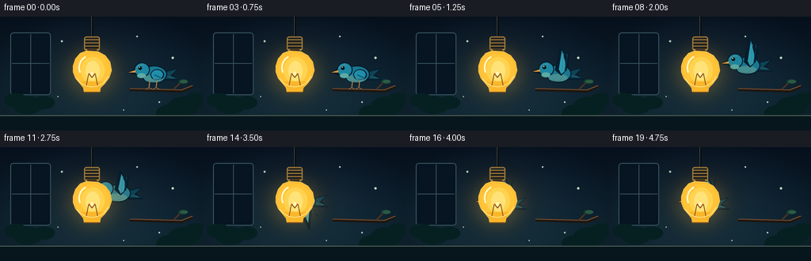
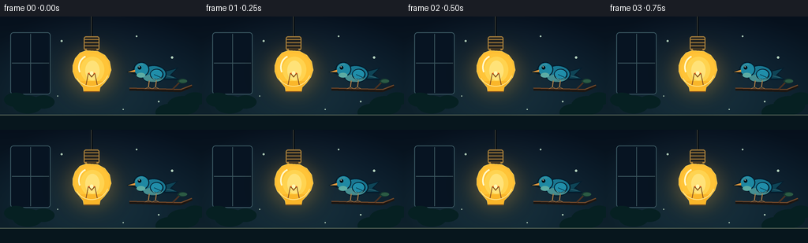
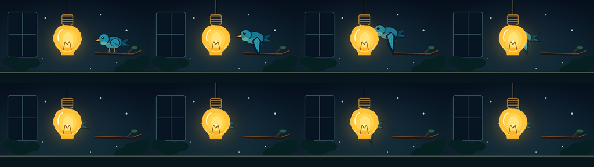

CODING AGENTS AS PIXEL WORLD MODELS
traex/GPT-5.6-Sol · dynamic_spatial_relationship_0043
点击播放 · 原生 RGB 像素
逐轮保存的候选
回放视频、检查图与代码变化。
每份候选均可单独播放。实际图片检查记录在下方工具轨迹中。
候选 01播放与检查图
点击播放 · 原生 RGB 像素


展开代码变化
--- 上一保存版本
+++ 本次保存版本
@@ -0,0 +1,231 @@
+from pathlib import Path
+import math
+import numpy as np
+from PIL import Image, ImageDraw, ImageFilter
+import artifact_io
+
+# PixelWorld video: a small blue bird travels from the right side of a
+# foreground hanging bulb and is finally occluded by it.
+W, H, N = 256, 144, 20
+SS = 4
+SW, SH = W * SS, H * SS
+
+
+def sc(v):
+ return int(round(v * SS))
+
+
+def pts(seq):
+ return [(sc(x), sc(y)) for x, y in seq]
+
+
+def box(x0, y0, x1, y1):
+ return (sc(x0), sc(y0), sc(x1), sc(y1))
+
+
+def smoothstep(t):
+ t = max(0.0, min(1.0, t))
+ return t * t * (3.0 - 2.0 * t)
+
+
+def make_background():
+ yy, xx = np.mgrid[0:SH, 0:SW].astype(np.float32)
+ # Deep blue wall; slightly lighter at the lower center.
+ top = np.array([9, 24, 42], np.float32)
+ bot = np.array([22, 52, 67], np.float32)
+ t = (yy / (SH - 1))[..., None]
+ arr = top * (1 - t) + bot * t
+ # A restrained warm cast around the lamp, painted into the room.
+ d2 = ((xx / SS - 116) / 85) ** 2 + ((yy / SS - 67) / 67) ** 2
+ warm = np.exp(-d2 * 1.8)[..., None]
+ arr += warm * np.array([13, 9, 1], np.float32)
+ # Vignette gives the tiny scene a cinematic center.
+ dx = (xx - SW / 2) / (SW / 2)
+ dy = (yy - SH / 2) / (SH / 2)
+ vig = np.clip(1.0 - 0.24 * (dx * dx + dy * dy), 0.68, 1.0)[..., None]
+ arr *= vig
+ return Image.fromarray(np.uint8(np.clip(arr, 0, 255)), 'RGB').convert('RGBA')
+
+
+BASE = make_background()
+
+
+def draw_room(base):
+ d = ImageDraw.Draw(base, 'RGBA')
+ # A distant framed panel/window and soft architectural marks.
+ d.rounded_rectangle(box(13, 20, 64, 99), radius=sc(4), fill=(7, 20, 34, 115), outline=(61, 91, 101, 60), width=sc(1))
+ d.line(pts([(38.5, 22), (38.5, 97)]), fill=(59, 86, 94, 35), width=sc(1))
+ d.line(pts([(15, 59), (62, 59)]), fill=(59, 86, 94, 30), width=sc(1))
+ # Out-of-focus foliage, deliberately dark so the subjects read clearly.
+ for x, y, r in [(20,105,15),(35,111,19),(55,108,14),(232,112,20),(247,104,14),(215,121,18)]:
+ d.ellipse(box(x-r, y-r*.55, x+r, y+r*.65), fill=(6, 32, 34, 115))
+ # Table/sill across the bottom.
+ d.rectangle(box(0, 125, 256, 144), fill=(7, 22, 29, 165))
+ d.line(pts([(0,125), (256,125)]), fill=(91, 105, 91, 55), width=sc(1))
+ # A handful of low-contrast dust motes/bokeh points.
+ for x, y, r, a in [(78,31,1.2,58),(173,25,1.0,42),(218,52,1.4,40),(73,101,.8,50),(201,108,.9,43),(156,118,.7,35)]:
+ d.ellipse(box(x-r,y-r,x+r,y+r), fill=(180,210,190,a))
+
+
+def draw_branch(im):
+ d = ImageDraw.Draw(im, 'RGBA')
+ # The starting perch is only on the right, reinforcing the first relation.
+ d.line(pts([(164,92), (229,94), (243,88)]), fill=(28,22,18,220), width=sc(4))
+ d.line(pts([(164,90.8), (229,92.5), (243,87)]), fill=(111,72,43,220), width=sc(1.4))
+ d.line(pts([(219,92), (229,82)]), fill=(76,50,34,210), width=sc(2))
+ d.ellipse(box(225,79,237,85), fill=(22,57,48,210))
+ d.ellipse(box(227,80,237,84), fill=(44,91,68,160))
+
+
+def draw_bird(im, x, y, frame, flying, light_amount):
+ """Draw left-facing bird. This entire layer precedes the bulb layer."""
+ layer = Image.new('RGBA', (SW, SH), (0,0,0,0))
+ d = ImageDraw.Draw(layer, 'RGBA')
+ # Faster wing beat once airborne; folded wing while perched.
+ phase = math.sin(frame * 1.72)
+ outline = (5, 29, 45, 245)
+ tail_dark = (14, 68, 86, 255)
+ teal = (25, 122, 143, 255)
+ blue = (28, 139, 171, 255)
+ lightblue = (66, 175, 190, 255)
+ warm = int(35 * light_amount)
+
+ # Tail fans to the right. Its final exposed tips help show that the bird
+ # continues behind (not in front of) the bulb.
+ d.polygon(pts([(x+13,y-2),(x+35,y-8),(x+27,y+1),(x+36,y+8),(x+13,y+8)]), fill=outline)
+ d.polygon(pts([(x+13,y-1),(x+32,y-6),(x+24,y+2),(x+33,y+6),(x+12,y+6)]), fill=tail_dark)
+ d.line(pts([(x+16,y+2),(x+29,y+5)]), fill=(88+warm,151,156,170), width=sc(.8))
+
+ if flying:
+ # Far wing, moving in the opposite visual direction for a layered flap.
+ if phase >= 0:
+ far = [(x+4,y-3),(x+18,y-24-8*phase),(x+16,y-7),(x+11,y+6),(x-1,y+2)]
+ else:
+ far = [(x+3,y-2),(x+24,y+14-8*phase),(x+11,y+10),(x-2,y+3)]
+ d.polygon(pts(far), fill=outline)
+ inset = [(px*.82+x*.18, py*.82+y*.18) for px,py in far]
+ d.polygon(pts(inset), fill=(20,91,116,255))
+
+ # Body and a subtly warm underside from the bulb.
+ d.ellipse(box(x-13,y-11,x+20,y+12), fill=outline)
+ d.ellipse(box(x-11.5,y-9.5,x+18.5,y+10.5), fill=(25+warm,119+int(18*light_amount),145,255))
+ d.ellipse(box(x-9,y+1,x+15,y+10.5), fill=(78+warm,160+int(20*light_amount),161,220))
+
+ # Near wing is the strongest articulation of flight.
+ if flying:
+ if phase >= 0:
+ wing = [(x+7,y+3),(x-1,y-4),(x+6,y-29-12*phase),(x+14,y-17-7*phase),(x+14,y-4)]
+ inner = [(x+7,y+1),(x+4,y-5),(x+8,y-23-8*phase),(x+12,y-14),(x+12,y-3)]
+ else:
+ wing = [(x+7,y-2),(x+15,y+5),(x+12,y+27-12*phase),(x+3,y+18-5*phase),(x-1,y+5)]
+ inner = [(x+8,y),(x+12,y+6),(x+10,y+21-8*phase),(x+4,y+14),(x+2,y+5)]
+ d.polygon(pts(wing), fill=outline)
+ d.polygon(pts(inner), fill=(42+warm,155+int(10*light_amount),177,255))
+ # Two clean feather divisions.
+ if phase >= 0:
+ d.line(pts([(x+8,y-2),(x+10,y-20-7*phase)]), fill=(110,205,205,145), width=sc(.8))
+ d.line(pts([(x+11,y-1),(x+14,y-13-5*phase)]), fill=(7,72,99,140), width=sc(.8))
+ else:
+ d.line(pts([(x+8,y+3),(x+8,y+19-6*phase)]), fill=(108,205,202,130), width=sc(.8))
+ else:
+ # Folded, scalloped wing for the establishing pose.
+ d.ellipse(box(x-1,y-6,x+16,y+8), fill=outline)
+ d.ellipse(box(x,y-5,x+14.5,y+6.5), fill=(32,142,170,255))
+ d.arc(box(x+1,y-3,x+14,y+8), 20, 155, fill=(105,202,199,165), width=sc(1))
+ d.line(pts([(x+4,y+1),(x+13,y+5)]), fill=(8,77,101,145), width=sc(1))
+
+ # Round head, cheek patch, beak and bright eye: readable even at 256px.
+ d.ellipse(box(x-22,y-15,x-2,y+4), fill=outline)
+ d.ellipse(box(x-20.5,y-13.5,x-3.2,y+2.7), fill=(30+warm,137+int(15*light_amount),163,255))
+ d.ellipse(box(x-18,y-1,x-7,y+5), fill=(99+warm,184,174,235))
+ d.polygon(pts([(x-20.5,y-6),(x-31,y-2),(x-20,y+1)]), fill=(6,25,34,255))
+ d.polygon(pts([(x-20,y-5),(x-29,y-2),(x-20,y-2)]), fill=(224,153,64,255))
+ d.ellipse(box(x-16.5,y-9.8,x-12,y-5.3), fill=(4,18,25,255))
+ d.ellipse(box(x-15.6,y-9.3,x-14.2,y-7.9), fill=(239,252,233,255))
+ # Crown shine and breast feather marks.
+ d.arc(box(x-19,y-12,x-5,y), 195, 292, fill=(103+warm,205,207,170), width=sc(1))
+ d.arc(box(x-6,y+1,x+8,y+10), 15, 135, fill=(134+warm,207,188,115), width=sc(.8))
+
+ # Feet grip the perch only during the still establishing beat.
+ if not flying:
+ for dx in (-2, 7):
+ d.line(pts([(x+dx,y+9),(x+dx-1,y+17)]), fill=(177,126,69,255), width=sc(1.2))
+ d.line(pts([(x+dx-1,y+17),(x+dx-5,y+19)]), fill=(177,126,69,255), width=sc(.8))
+ d.line(pts([(x+dx-1,y+17),(x+dx+3,y+19)]), fill=(177,126,69,255), width=sc(.8))
+
+ # A very soft shadow grounds the bird on the opening perch.
+ im.alpha_composite(layer)
+
+
+def draw_lamp(im, frame):
+ cx = 116
+ # Warm halo is behind both bird and bulb, so it never weakens occlusion.
+ halo = Image.new('RGBA', (SW,SH), (0,0,0,0))
+ hd = ImageDraw.Draw(halo, 'RGBA')
+ pulse = 0.97 + 0.03 * math.sin(frame * .43)
+ hd.ellipse(box(cx-39,34,cx+39,108), fill=(255,171,46,int(57*pulse)))
+ halo = halo.filter(ImageFilter.GaussianBlur(sc(13)))
+ im.alpha_composite(halo)
+
+ d = ImageDraw.Draw(im, 'RGBA')
+ # Cord and brass socket.
+ d.line(pts([(cx,0),(cx,27)]), fill=(5,12,18,255), width=sc(3))
+ d.line(pts([(cx-0.6,0),(cx-0.6,27)]), fill=(85,84,72,105), width=sc(.7))
+ d.rounded_rectangle(box(cx-10,25,cx+10,43), radius=sc(3), fill=(34,35,33,255), outline=(155,119,57,255), width=sc(1.4))
+ for yy in (29,33,37,41):
+ d.line(pts([(cx-9,yy),(cx+9,yy)]), fill=(188,139,61,180), width=sc(1))
+ d.rectangle(box(cx-6,41,cx+6,47), fill=(65,51,31,255))
+
+ # Opaque luminous bulb body: this is the foreground occluder.
+ silhouette = [(cx-7,43),(cx-15,46),(cx-21,53),(cx-24,62),(cx-24,70),
+ (cx-21,78),(cx-15,85),(cx-11,90),(cx-10,96),
+ (cx+10,96),(cx+11,90),(cx+16,85),(cx+22,77),
+ (cx+25,68),(cx+23,57),(cx+17,49),(cx+8,44)]
+ d.polygon(pts(silhouette), fill=(255,191,53,255), outline=(255,229,143,255))
+ # Layered center gives a glassy pear shape without becoming transparent.
+ d.ellipse(box(cx-21,47,cx+22,87), fill=(255,196,56,255))
+ d.ellipse(box(cx-14,51,cx+16,84), fill=(255,211,80,215))
+ d.ellipse(box(cx-8,56,cx+10,81), fill=(255,226,120,185))
+ # Neck/base transition restores the classic bulb silhouette.
+ d.polygon(pts([(cx-15,82),(cx-10,90),(cx-10,96),(cx+10,96),(cx+11,90),(cx+16,82)]), fill=(250,182,42,255))
+ # Filament and supports.
+ d.line(pts([(cx-7,87),(cx-4,72),(cx,77),(cx+4,72),(cx+7,87)]), fill=(129,73,30,205), width=sc(1.1))
+ d.line(pts([(cx-4,72),(cx+4,72)]), fill=(249,105,30,245), width=sc(1.2))
+ d.ellipse(box(cx-2.2,69.5,cx+2.2,74), fill=(255,247,178,255))
+ # Bright crescent and lower rim sell glass and foreground depth.
+ d.arc(box(cx-17,49,cx+10,80), 155, 250, fill=(255,250,205,235), width=sc(2.1))
+ d.arc(box(cx-22,47,cx+22,89), 20, 150, fill=(255,229,140,170), width=sc(1))
+ d.line(pts([(cx-10,95.5),(cx+10,95.5)]), fill=(117,73,30,220), width=sc(1.2))
+
+
+def generate():
+ frames = []
+ for i in range(N):
+ im = BASE.copy()
+ draw_room(im)
+ draw_branch(im)
+
+ # Five-frame establishing shot: bird clearly to the right of the bulb.
+ if i <= 4:
+ p = 0.0
+ else:
+ p = smoothstep((i - 4) / 12.0)
+ x = 191 + (117.5 - 191) * p
+ # A gentle takeoff arc that settles exactly behind the lamp globe.
+ y = 72.5 - 15.0 * math.sin(math.pi * p) - 1.5 * p
+ flying = i >= 5
+ light_amount = smoothstep((165 - x) / 48.0)
+ draw_bird(im, x, y, i, flying, light_amount)
+
+ # Lamp is intentionally last: at the end, its unbroken bright contour
+ # covers the bird's head/body/wing, unequivocally placing bird behind it.
+ draw_lamp(im, i)
+
+ rgb = im.convert('RGB').resize((W,H), Image.Resampling.LANCZOS)
+ frames.append(np.asarray(rgb, dtype=np.uint8))
+ return np.stack(frames, axis=0)
+
+
+if __name__ == '__main__':
+ case_dir = Path(__file__).resolve().parent
+ artifact_io.save(generate(), case_dir)
可观测工具轨迹
实际执行的命令与返回图片。
命令 1exit 0
/bin/bash -lc "cat prompt.txt && printf '\\n---RULES---\\n' && cat GENERATION_RULES.md && printf '\\n---SPEC---\\n' && cat task_spec.json"
命令 2exit 0
/bin/bash -lc "find . -maxdepth 2 -type f -printf '%p\\n' | sort"
命令 3exit 0
/bin/bash -lc "which ffmpeg; which python3; python3 - <<'PY'
try:
import cv2; print('cv2',cv2.__version__)
except Exception as e: print('no cv2',e)
try:
from PIL import Image; print('PIL ok')
except Exception as e: print('no PIL',e)
PY"命令 4exit 0
/bin/bash -lc 'cat artifact_io.py'
命令 5exit 0
/bin/bash -lc "cat > generate.py <<'PY'
from pathlib import Path
import math
import numpy as np
from PIL import Image, ImageDraw, ImageFilter
import artifact_io
# PixelWorld video: a small blue bird travels from the right side of a
# foreground hanging bulb and is finally occluded by it.
W, H, N = 256, 144, 20
SS = 4
SW, SH = W * SS, H * SS
def sc(v):
return int(round(v * SS))
def pts(seq):
return [(sc(x), sc(y)) for x, y in seq]
def box(x0, y0, x1, y1):
return (sc(x0), sc(y0), sc(x1), sc(y1))
def smoothstep(t):
t = max(0.0, min(1.0, t))
return t * t * (3.0 - 2.0 * t)
def make_background():
yy, xx = np.mgrid[0:SH, 0:SW].astype(np.float32)
# Deep blue wall; slightly lighter at the lower center.
top = np.array([9, 24, 42], np.float32)
bot = np.array([22, 52, 67], np.float32)
t = (yy / (SH - 1))[..., None]
arr = top * (1 - t) + bot * t
# A restrained warm cast around the lamp, painted into the room.
d2 = ((xx / SS - 116) / 85) ** 2 + ((yy / SS - 67) / 67) ** 2
warm = np.exp(-d2 * 1.8)[..., None]
arr += warm * np.array([13, 9, 1], np.float32)
# Vignette gives the tiny scene a cinematic center.
dx = (xx - SW / 2) / (SW / 2)
dy = (yy - SH / 2) / (SH / 2)
vig = np.clip(1.0 - 0.24 * (dx * dx + dy * dy), 0.68, 1.0)[..., None]
arr *= vig
return Image.fromarray(np.uint8(np.clip(arr, 0, 255)), 'RGB').convert('RGBA')
BASE = make_background()
def draw_room(base):
d = ImageDraw.Draw(base, 'RGBA')
# A distant framed panel/window and soft architectural marks.
d.rounded_rectangle(box(13, 20, 64, 99), radius=sc(4), fill=(7, 20, 34, 115), outline=(61, 91, 101, 60), width=sc(1))
d.line(pts([(38.5, 22), (38.5, 97)]), fill=(59, 86, 94, 35), width=sc(1))
d.line(pts([(15, 59), (62, 59)]), fill=(59, 86, 94, 30), width=sc(1))
# Out-of-focus foliage, deliberately dark so the subjects read clearly.
for x, y, r in [(20,105,15),(35,111,19),(55,108,14),(232,112,20),(247,104,14),(215,121,18)]:
d.ellipse(box(x-r, y-r*.55, x+r, y+r*.65), fill=(6, 32, 34, 115))
# Table/sill across the bottom.
d.rectangle(box(0, 125, 256, 144), fill=(7, 22, 29, 165))
d.line(pts([(0,125), (256,125)]), fill=(91, 105, 91, 55), width=sc(1))
# A handful of low-contrast dust motes/bokeh points.
for x, y, r, a in [(78,31,1.2,58),(173,25,1.0,42),(218,52,1.4,40),(73,101,.8,50),(201,108,.9,43),(156,118,.7,35)]:
d.ellipse(box(x-r,y-r,x+r,y+r), fill=(180,210,190,a))
def draw_branch(im):
d = ImageDraw.Draw(im, 'RGBA')
# The starting perch is only on the right, reinforcing the first relation.
d.line(pts([(164,92), (229,94), (243,88)]), fill=(28,22,18,220), width=sc(4))
d.line(pts([(164,90.8), (229,92.5), (243,87)]), fill=(111,72,43,220), width=sc(1.4))
d.line(pts([(219,92), (229,82)]), fill=(76,50,34,210), width=sc(2))
d.ellipse(box(225,79,237,85), fill=(22,57,48,210))
d.ellipse(box(227,80,237,84), fill=(44,91,68,160))
def draw_bird(im, x, y, frame, flying, light_amount):
\"\"\"Draw left-facing bird. This entire layer precedes the bulb layer.\"\"\"
layer = Image.new('RGBA', (SW, SH), (0,0,0,0))
d = ImageDraw.Draw(layer, 'RGBA')
# Faster wing beat once airborne; folded wing while perched.
phase = math.sin(frame * 1.72)
outline = (5, 29, 45, 245)
tail_dark = (14, 68, 86, 255)
teal = (25, 122, 143, 255)
blue = (28, 139, 171, 255)
lightblue = (66, 175, 190, 255)
warm = int(35 * light_amount)
# Tail fans to the right. Its final exposed tips help show that the bird
# continues behind (not in front of) the bulb.
d.polygon(pts([(x+13,y-2),(x+35,y-8),(x+27,y+1),(x+36,y+8),(x+13,y+8)]), fill=outline)
d.polygon(pts([(x+13,y-1),(x+32,y-6),(x+24,y+2),(x+33,y+6),(x+12,y+6)]), fill=tail_dark)
d.line(pts([(x+16,y+2),(x+29,y+5)]), fill=(88+warm,151,156,170), width=sc(.8))
if flying:
# Far wing, moving in the opposite visual direction for a layered flap.
if phase >= 0:
far = [(x+4,y-3),(x+18,y-24-8*phase),(x+16,y-7),(x+11,y+6),(x-1,y+2)]
else:
far = [(x+3,y-2),(x+24,y+14-8*phase),(x+11,y+10),(x-2,y+3)]
d.polygon(pts(far), fill=outline)
inset = [(px*.82+x*.18, py*.82+y*.18) for px,py in far]
d.polygon(pts(inset), fill=(20,91,116,255))
# Body and a subtly warm underside from the bulb.
d.ellipse(box(x-13,y-11,x+20,y+12), fill=outline)
d.ellipse(box(x-11.5,y-9.5,x+18.5,y+10.5), fill=(25+warm,119+int(18*light_amount),145,255))
d.ellipse(box(x-9,y+1,x+15,y+10.5), fill=(78+warm,160+int(20*light_amount),161,220))
# Near wing is the strongest articulation of flight.
if flying:
if phase >= 0:
wing = [(x+7,y+3),(x-1,y-4),(x+6,y-29-12*phase),(x+14,y-17-7*phase),(x+14,y-4)]
inner = [(x+7,y+1),(x+4,y-5),(x+8,y-23-8*phase),(x+12,y-14),(x+12,y-3)]
else:
wing = [(x+7,y-2),(x+15,y+5),(x+12,y+27-12*phase),(x+3,y+18-5*phase),(x-1,y+5)]
inner = [(x+8,y),(x+12,y+6),(x+10,y+21-8*phase),(x+4,y+14),(x+2,y+5)]
d.polygon(pts(wing), fill=outline)
d.polygon(pts(inner), fill=(42+warm,155+int(10*light_amount),177,255))
# Two clean feather divisions.
if phase >= 0:
d.line(pts([(x+8,y-2),(x+10,y-20-7*phase)]), fill=(110,205,205,145), width=sc(.8))
d.line(pts([(x+11,y-1),(x+14,y-13-5*phase)]), fill=(7,72,99,140), width=sc(.8))
else:
d.line(pts([(x+8,y+3),(x+8,y+19-6*phase)]), fill=(108,205,202,130), width=sc(.8))
else:
# Folded, scalloped wing for the establishing pose.
d.ellipse(box(x-1,y-6,x+16,y+8), fill=outline)
d.ellipse(box(x,y-5,x+14.5,y+6.5), fill=(32,142,170,255))
d.arc(box(x+1,y-3,x+14,y+8), 20, 155, fill=(105,202,199,165), width=sc(1))
d.line(pts([(x+4,y+1),(x+13,y+5)]), fill=(8,77,101,145), width=sc(1))
# Round head, cheek patch, beak and bright eye: readable even at 256px.
d.ellipse(box(x-22,y-15,x-2,y+4), fill=outline)
d.ellipse(box(x-20.5,y-13.5,x-3.2,y+2.7), fill=(30+warm,137+int(15*light_amount),163,255))
d.ellipse(box(x-18,y-1,x-7,y+5), fill=(99+warm,184,174,235))
d.polygon(pts([(x-20.5,y-6),(x-31,y-2),(x-20,y+1)]), fill=(6,25,34,255))
d.polygon(pts([(x-20,y-5),(x-29,y-2),(x-20,y-2)]), fill=(224,153,64,255))
d.ellipse(box(x-16.5,y-9.8,x-12,y-5.3), fill=(4,18,25,255))
d.ellipse(box(x-15.6,y-9.3,x-14.2,y-7.9), fill=(239,252,233,255))
# Crown shine and breast feather marks.
d.arc(box(x-19,y-12,x-5,y), 195, 292, fill=(103+warm,205,207,170), width=sc(1))
d.arc(box(x-6,y+1,x+8,y+10), 15, 135, fill=(134+warm,207,188,115), width=sc(.8))
# Feet grip the perch only during the still establishing beat.
if not flying:
for dx in (-2, 7):
d.line(pts([(x+dx,y+9),(x+dx-1,y+17)]), fill=(177,126,69,255), width=sc(1.2))
d.line(pts([(x+dx-1,y+17),(x+dx-5,y+19)]), fill=(177,126,69,255), width=sc(.8))
d.line(pts([(x+dx-1,y+17),(x+dx+3,y+19)]), fill=(177,126,69,255), width=sc(.8))
# A very soft shadow grounds the bird on the opening perch.
im.alpha_composite(layer)
def draw_lamp(im, frame):
cx = 116
# Warm halo is behind both bird and bulb, so it never weakens occlusion.
halo = Image.new('RGBA', (SW,SH), (0,0,0,0))
hd = ImageDraw.Draw(halo, 'RGBA')
pulse = 0.97 + 0.03 * math.sin(frame * .43)
hd.ellipse(box(cx-39,34,cx+39,108), fill=(255,171,46,int(57*pulse)))
halo = halo.filter(ImageFilter.GaussianBlur(sc(13)))
im.alpha_composite(halo)
d = ImageDraw.Draw(im, 'RGBA')
# Cord and brass socket.
d.line(pts([(cx,0),(cx,27)]), fill=(5,12,18,255), width=sc(3))
d.line(pts([(cx-0.6,0),(cx-0.6,27)]), fill=(85,84,72,105), width=sc(.7))
d.rounded_rectangle(box(cx-10,25,cx+10,43), radius=sc(3), fill=(34,35,33,255), outline=(155,119,57,255), width=sc(1.4))
for yy in (29,33,37,41):
d.line(pts([(cx-9,yy),(cx+9,yy)]), fill=(188,139,61,180), width=sc(1))
d.rectangle(box(cx-6,41,cx+6,47), fill=(65,51,31,255))
# Opaque luminous bulb body: this is the foreground occluder.
silhouette = [(cx-7,43),(cx-15,46),(cx-21,53),(cx-24,62),(cx-24,70),
(cx-21,78),(cx-15,85),(cx-11,90),(cx-10,96),
(cx+10,96),(cx+11,90),(cx+16,85),(cx+22,77),
(cx+25,68),(cx+23,57),(cx+17,49),(cx+8,44)]
d.polygon(pts(silhouette), fill=(255,191,53,255), outline=(255,229,143,255))
# Layered center gives a glassy pear shape without becoming transparent.
d.ellipse(box(cx-21,47,cx+22,87), fill=(255,196,56,255))
d.ellipse(box(cx-14,51,cx+16,84), fill=(255,211,80,215))
d.ellipse(box(cx-8,56,cx+10,81), fill=(255,226,120,185))
# Neck/base transition restores the classic bulb silhouette.
d.polygon(pts([(cx-15,82),(cx-10,90),(cx-10,96),(cx+10,96),(cx+11,90),(cx+16,82)]), fill=(250,182,42,255))
# Filament and supports.
d.line(pts([(cx-7,87),(cx-4,72),(cx,77),(cx+4,72),(cx+7,87)]), fill=(129,73,30,205), width=sc(1.1))
d.line(pts([(cx-4,72),(cx+4,72)]), fill=(249,105,30,245), width=sc(1.2))
d.ellipse(box(cx-2.2,69.5,cx+2.2,74), fill=(255,247,178,255))
# Bright crescent and lower rim sell glass and foreground depth.
d.arc(box(cx-17,49,cx+10,80), 155, 250, fill=(255,250,205,235), width=sc(2.1))
d.arc(box(cx-22,47,cx+22,89), 20, 150, fill=(255,229,140,170), width=sc(1))
d.line(pts([(cx-10,95.5),(cx+10,95.5)]), fill=(117,73,30,220), width=sc(1.2))
def generate():
frames = []
for i in range(N):
im = BASE.copy()
draw_room(im)
draw_branch(im)
# Five-frame establishing shot: bird clearly to the right of the bulb.
if i <= 4:
p = 0.0
else:
p = smoothstep((i - 4) / 12.0)
x = 191 + (117.5 - 191) * p
# A gentle takeoff arc that settles exactly behind the lamp globe.
y = 72.5 - 15.0 * math.sin(math.pi * p) - 1.5 * p
flying = i >= 5
light_amount = smoothstep((165 - x) / 48.0)
draw_bird(im, x, y, i, flying, light_amount)
# Lamp is intentionally last: at the end, its unbroken bright contour
# covers the bird's head/body/wing, unequivocally placing bird behind it.
draw_lamp(im, i)
rgb = im.convert('RGB').resize((W,H), Image.Resampling.LANCZOS)
frames.append(np.asarray(rgb, dtype=np.uint8))
return np.stack(frames, axis=0)
if __name__ == '__main__':
case_dir = Path(__file__).resolve().parent
artifact_io.save(generate(), case_dir)
PY
python3 generate.py
ls -lh pixels.npz inspection.png index.html frames/00.png frames/19.png"命令 6exit 0
/bin/bash -lc "python3 - <<'PY'
import numpy as np
from PIL import Image
x=np.load('pixels.npz')['pixels']
print(x.shape,x.dtype, 'firstlast changed', np.mean(x[:,:,0]"'!=x[:,:,-1]))
# Reconstruct montage around the occlusion transition
ims=[Image.open(f'"'frames/{i:02d}.png') for i in [4,7,10,13,15,16,17,19]]
out=Image.new('RGB',(256*4,144*2),(0,0,0))
for k,im in enumerate(ims): out.paste(im,((k%4)*256,(k//4)*144))
out.save('motion_check.png')
PY"视觉工具实际返回图片 1

视觉工具实际返回图片 2

保存候选 1 份；完成命令 6 次；可验证图片返回 2 张。原始 API 响应与完整日志保留在本地。